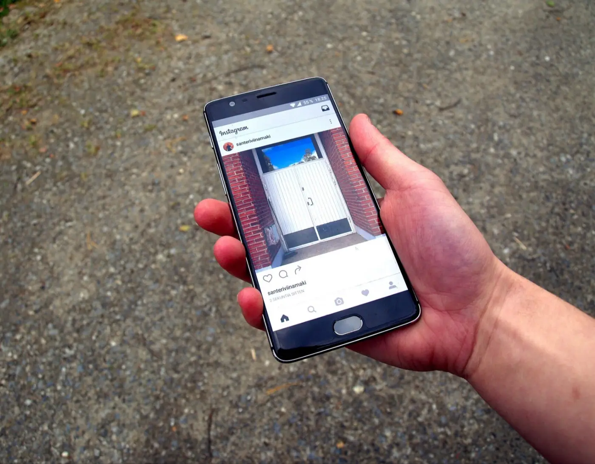
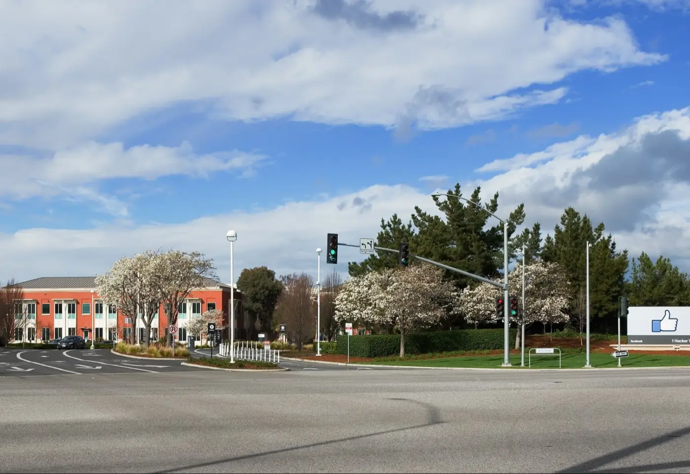
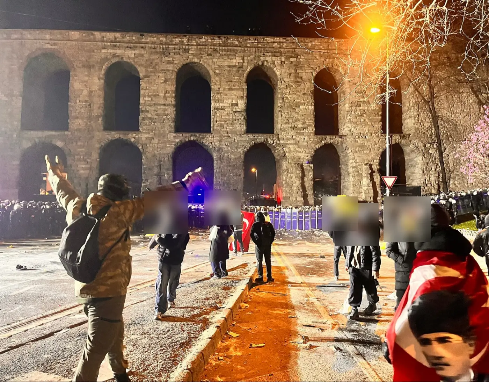

Who decides what you see online
This month India's IT ministry asked Meta to change what Facebook and Instagram recommend about protests, and posts covering them were blocked. Governments and the companies themselves have done this before.
Latest in this thread
Every update →- November 2026
X says 'imposter' sent account takedown notices
SpeechX told the Delhi High Court an imposter, not Delhi Police, sent notices to remove IFF and SFLC accounts; the accounts stay and the case was closed. Police did not comment on record.
Scroll · Edition of Sat 7 NovRights groups challenge police bid to remove accounts
SpeechTwo digital rights groups asked the Delhi High Court to quash reports purportedly from Delhi Police asking X to remove their accounts; police have neither confirmed nor withdrawn them, the groups say.
Scroll · Edition of Fri 6 Nov
On 10 October India's IT ministry asked Meta to curb how protest posts are recommended; posts by news pages and journalists were then blocked.
Hindustan Times · NewslaundryA digital rights group counted 181 restrictions in India between 1 and 18 October.
ThePrintRights groups call the advisory censorship; the Supreme Court has held that internet access is a fundamental right.
MediaNama · Indian Express File photo · 2022
File photo · 2022i

The story
 File photo · 2017
File photo · 2017i

India's IT ministry sent Meta an unpublished advisory on 10 October about how protest posts are amplified.
More detail and sources
On 10 October India's IT ministry sent Meta an unpublished advisory. It asked Meta to make sure Facebook and Instagram do not "disproportionately amplify" misleading posts about protests or police action, to add context to videos of ongoing events, and to report back what it did. Hindustan Times · PTI via Daily Excelsior
Meta blocked posts or accounts of several news outlets and a journalist in India, citing government notices.
More detail and sources
Between 10 and 13 October, Meta blocked in India posts or accounts of Molitics India, Mathrubhumi English, Observer Post Hindi, Journo Mirror and journalist Shubhangi Das Gupta, citing government notices or "local IT Rules". Some got no notice. The digital rights group SFLC.in counted 181 restrictions between 1 and 18 October. Newslaundry · ThePrint

File photo · 2016i

A climate group's Instagram account was also blocked; rights groups say the ministry lacks the legal power.
More detail and sources
The Instagram account of Fridays For Future India was also blocked, with no reason given. The Internet Freedom Foundation calls the advisory "a censorship directive in all but name" and says the ministry has no legal power to issue it. On 15 October the Supreme Court held that access to the internet is a fundamental right. MediaNama · The South First · Indian Express

File photo · 2014i

Platforms also decide on their own: HRW documented 1,050 Palestine-related removals in 2023.
More detail and sources
Companies also decide on their own. Human Rights Watch documented 1,050 cases of Palestine-related posts removed or suppressed on Instagram and Facebook after 7 October 2023; Meta said it was guided by human rights principles. In 2024 Meta stopped recommending political content on Instagram and Threads by default, then in January 2025 ended US fact-checking, saying "too much harmless content gets censored". Human Rights Watch · Instagram · Meta

Photo from the eventi

Elsewhere, Turkey has ordered X to block at least 1,270 accounts.
More detail and sources
In Turkey, after Istanbul's mayor was detained in March 2025, X blocked accounts on official orders, later including the mayor's own, while challenging the orders in court. Rights groups say Turkey has ordered X to block at least 1,270 accounts. In India in 2021, Twitter withheld about 250 accounts during the farmers' protests; the government said they were a "grave threat to public order". Reuters · AP · Al Jazeera
i

Brazil's electoral court ordered Meta not to restrict political content before the runoff.
More detail and sources
In Brazil, the electoral court has ordered Meta not to "unjustifiably restrict" political content before the 25 October runoff, after one campaign said its reach was cut; Meta says "any suggestion that Meta favors one side is false". Vietnam pressed Facebook in 2020 to censor more "anti-state" posts, and Nigeria blocked Twitter in 2021. Al Jazeera · Reuters · The Guardian
Two rights groups asked a court to quash police requests that X remove their accounts.
More detail and sources
On 5 November the Internet Freedom Foundation and the Software Freedom Law Centre asked the Delhi High Court to quash reports purportedly sent by Delhi Police to X. A 30 October report listed their posts as defaming the RSS; a 2 November report listed 40 links from 37 posts and sought removal of the IFF, SFLC and GeoBlockedIndia accounts, plus posts by 16 others. The groups say police have neither confirmed nor withdrawn the reports; several RSS office-bearers said the notice was not authentic. Scroll
X says the police takedown notices were sent by an imposter; the accounts stay up.
More detail and sources
On 6 November X told the Delhi High Court that the notices seeking removal of the IFF and SFLC accounts came from an imposter, not Delhi Police, after an internal investigation; it said it had complained to the police and the accounts would not be taken down. The court disposed of the petition. Delhi Police did not answer Scroll's questions on record. Scroll
In pictures
i

- The IT ministry's advisory says such posts, without context or amplified by recommendations, “may contribute to public confusion, apprehension and disturbance of public order”.
- It says any action must respect lawful expression.
- The ministry and Meta did not respond to requests for comment.
Show 1 more
- X told the Delhi High Court on 6 November that the takedown notices came from an imposter, not Delhi Police, and that it had complained to police; Delhi Police did not respond on record.
In the daily edition: Sat 07 Nov · Fri 06 Nov · Tue 20 Oct